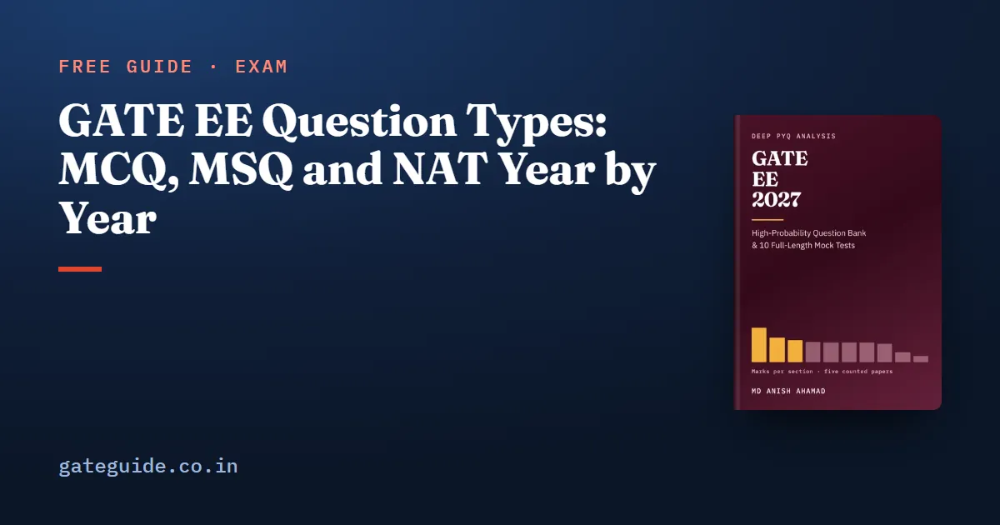

GATE EE Question Types: MCQ, MSQ and NAT Year by Year

GATE EE uses three question types, and their mix has changed every year. Counted from the official papers, NAT questions ran from 28 in 2023 down to 13 in 2026, and MSQs from none in 2022 to seven in 2024. Every MSQ and every NAT sat in a technical section. This guide gives the year-by-year counts, explains how each type is answered and marked, and shows how to practise for a numerical answer with no options to lean on.
In this guide
Key takeaways
- MCQ/MSQ/NAT over the whole paper: 43/0/22 in 2022, 31/6/28 in 2023, 35/7/23 in 2024, 42/4/19 in 2025, 47/5/13 in 2026.
- All 50 General Aptitude questions were MCQs; every MSQ and NAT was technical.
- 105 of the 275 technical questions were NAT, close to two in five.
- Only MCQs carry negative marking; MSQ and NAT never do.
- Power Electronics set more NATs than any other section, 17 of its 31 questions.
- Five papers show no direction in the mix, so practise all three types as fixed features.
The three types, defined
- An MCQ has four options with exactly one correct. A wrong answer loses one-third of the question's marks.
- An MSQ has four options with one or more correct. You score only by selecting every correct option and no wrong one. There is no partial credit and no penalty.
- A NAT has no options. You type a number, and it scores if it falls inside the range in the official key. There is no penalty.
For the full marking rules, see the marking scheme, which is common to every GATE paper.
The counted mix, year by year
Over the full 65 questions of each paper:
| Year | MCQ | MSQ | NAT | NAT marks |
|---|---|---|---|---|
| 2022 | 43 | 0 | 22 | 34 |
| 2023 | 31 | 6 | 28 | 49 |
| 2024 | 35 | 7 | 23 | 41 |
| 2025 | 42 | 4 | 19 | 32 |
| 2026 | 47 | 5 | 13 | 22 |
Now remove the ten General Aptitude questions, which were all MCQs. The technical block of 55 questions splits as follows:
| Year | Technical MCQ | MSQ | NAT |
|---|---|---|---|
| 2022 | 33 | 0 | 22 |
| 2023 | 21 | 6 | 28 |
| 2024 | 25 | 7 | 23 |
| 2025 | 32 | 4 | 19 |
| 2026 | 37 | 5 | 13 |
In 2023, more than half the technical questions were NAT. In 2026, fewer than a quarter were. That is the honest width of the record.
Remember: In every counted paper, at least 13 technical questions had no options at all. A method you can only recognise is not a method you can use.
Where the MSQs and NATs sat
Across the five papers, by section:
| Section | Questions | MSQ | NAT |
|---|---|---|---|
| Engineering Mathematics | 47 | 10 | 16 |
| Power Electronics | 31 | 1 | 17 |
| Electric circuits | 29 | 1 | 15 |
| Power Systems | 34 | 4 | 13 |
| Electrical Machines | 29 | 2 | 12 |
| Signals and Systems | 29 | 1 | 8 |
| Analog and Digital Electronics | 27 | 1 | 8 |
| Control Systems | 27 | 1 | 6 |
| Measurements | 8 | 0 | 5 |
| Electromagnetic Fields | 13 | 1 | 4 |
Two patterns stand out. Engineering Mathematics set ten of the 22 MSQs, because statement questions about matrices and functions suit it. Power Electronics leaned hardest on NAT, because a converter waveform naturally ends in a number.
Control Systems is the opposite: 20 of its 27 questions were MCQs, so most of its marks carry a penalty.
Answering a NAT with no options
Without options, you cannot work backwards or eliminate. You must reach the number yourself and type it correctly.
A worked example
A capacitor charges through a resistor from zero towards a fixed DC voltage. Take and ; these values are made up. Find the time for the capacitor voltage to reach half its final value, in milliseconds.
The time constant is . A first-order response covers half its change when , so:
Three habits make NAT answers safe:
- Keep four significant figures through the working and round only at the end.
- Check the unit the question asks for. Here it is milliseconds, so typing 0.0717 would score nothing.
- Sanity-check the size. Half the change must come before one time constant, and ms.
Trap: The most common NAT loss is a correct answer in the wrong unit or with the wrong power of ten. Read the last line of the question twice before you type.
Answering an MSQ
Judge each option as its own true-or-false statement. Prove it in a line, or find a counterexample. Tick only what you can defend.
Five of the 22 counted MSQs had exactly one correct option: 2023 (Q27), 2024 (Q30), 2024 (Q43), 2024 (Q44) and 2026 (Q31). So a single tick can be the full answer.
Answering an MCQ
Most marks on the paper are still MCQ. In 2026, MCQs carried 70 of the 100 marks. Use the options to check your answer, and guess only after eliminating at least one with confidence.
In one line: MCQ rewards care, MSQ rewards exact properties, and NAT rewards reaching the number on your own.
Why the mix moves, and what that means for 2027
The frame of the paper held still under five organisers: 65 questions, 100 marks, and General Aptitude at 15. The type mix did not. NAT fell from 28 to 13 between 2023 and 2026, while MCQ rose from 31 to 47 over the whole paper.
Read that as five draws, not a direction. Each paper was set by a different institute's panel, and five points cannot separate a steady shift from ordinary variation. The 2027 paper is set by IIT Madras, which set none of the counted papers.
So the safe assumption is simple. Expect all three types, a handful of MSQs and a substantial NAT block, and prepare as if either end of the counted range could return.
How to practise the mix
- Solve most practice problems to a number before you look at any options.
- Do MSQ practice in Engineering Mathematics, where they cluster.
- Practise NATs in Power Electronics and Electric circuits on the GATE virtual calculator, since that is the only calculator you get.
- Keep General Aptitude as MCQ practice with careful guessing; see the General Aptitude guide.
Raw marks from all three types are then converted into a GATE score, as the score and normalisation guide explains. The GATE EE 2027 book's ten mocks follow the 2027 pattern with all three types, so you can rehearse the mix before the day.
Quick revision
- Whole-paper MCQ/MSQ/NAT: 43/0/22, 31/6/28, 35/7/23, 42/4/19, 47/5/13.
- General Aptitude has been all MCQ; MSQ and NAT are technical only.
- 105 of 275 technical questions were NAT.
- Power Electronics: 17 NATs in 31 questions; Engineering Mathematics: 10 of the 22 MSQs.
- No penalty on MSQ or NAT; never leave a NAT blank.
- Five MSQs had a single correct option.
- Keep precision, check units, and round only at the end.
Frequently asked questions
How many NAT questions are there in GATE EE?
The number varies. Counted from the official papers, GATE EE had 22 NAT questions in 2022, 28 in 2023, 23 in 2024, 19 in 2025 and 13 in 2026, all in technical sections. Across five papers, 105 of the 275 technical questions were NAT. Prepare for a substantial numerical block, not a fixed count.
Is there negative marking for NAT questions in GATE EE?
No. NAT and MSQ questions carry no negative marking. Only MCQs do, at one-third of a mark for a wrong 1-mark MCQ and two-thirds for a wrong 2-mark MCQ. So you should always enter a reasoned number for a NAT rather than leave it blank.
Which GATE EE subject has the most NAT questions?
Power Electronics. Seventeen of its 31 counted questions from 2022 to 2026 were NAT, more than any other section. Engineering Mathematics had 16 and Electric circuits 15. Converter waveforms worked through to a number are the typical NAT shape in Power Electronics.
Does General Aptitude have NAT or MSQ questions in GATE EE?
Not in the counted papers. All fifty General Aptitude questions from 2022 to 2026 were single-answer MCQs, so all of them carried negative marking. Every MSQ and every NAT in those papers sat in a technical section. Check the current notification in case the pattern changes.
How is a NAT answer checked in GATE EE?
The official key gives an accepted range, and any value inside it scores full marks. Some ranges are a single exact value and some allow a spread, such as 47.5 to 48.0 in one 2026 question. Keep enough decimal places and round only at the end of your working.
Sources
Dates, fees and the syllabus are set by the GATE 2027 organising institute and can change. Always confirm at gate2027.iitm.ac.in.